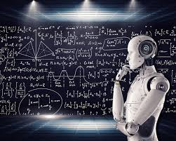

Machine Learning (ML) is a subset of Artificial Intelligence (AI) that focuses on enabling computers to learn from data and improve their performance over time without being explicitly programmed. Instead of writing code to perform specific tasks, we feed the machine with data and let it learn patterns, relationships, and rules from that data. The main goal of machine learning is to make systems that can automatically learn and make decisions or predictions.
